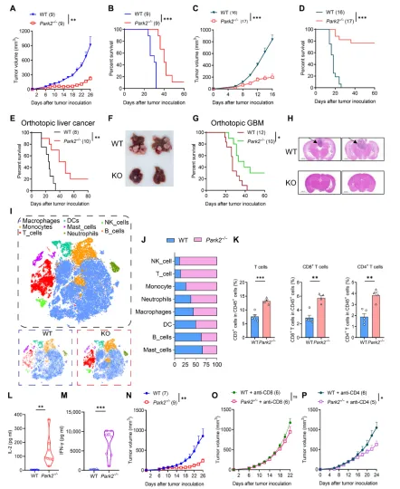
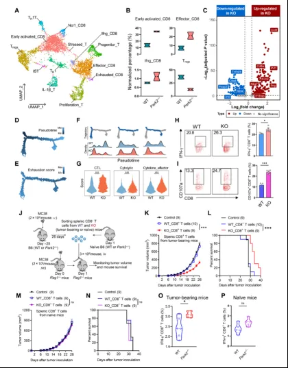
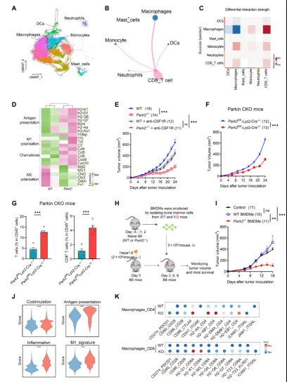
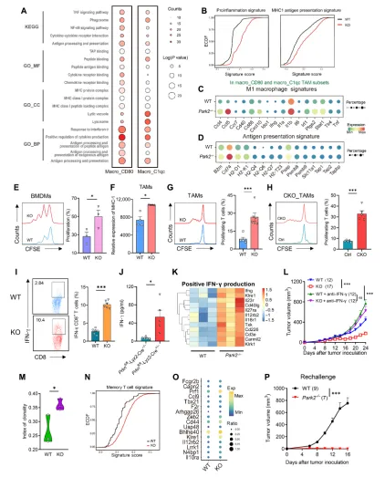
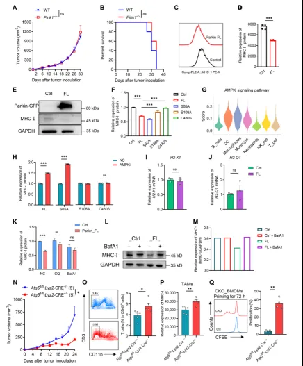
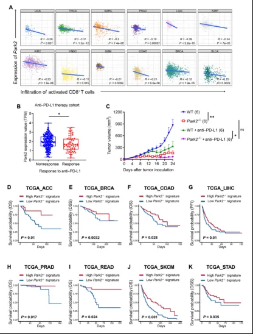

IF=11.83|scRNA揭示AMPK依赖的Parkin激活抑制巨噬细胞抗原提呈
原文：https://mp.weixin.qq.com/s?__biz=MzAwMzIzOTk5OQ==&mid=2247529353&idx=1&sn=7bcab5f0fdab9058103a23e4730fc201&chksm=9b3c0ad9ac4b83cfab328b7acff71bfd8ac0c270a6acbfcab478a33731ebce84797642e501d2#rd 合集：文献速递
一、写在前面
本次分享的是发布于《SCIENCE ADVANCES》（IF=11.83）的文章****，**** 感兴趣的同学可以看看原文："AMPK-dependent Parkin activation suppressesmacrophage antigen presentation to promotetumor progression".单细胞教程可见：生信基地122篇单细胞教程全索引肿瘤免疫治疗近年来虽取得重大突破（如免疫检查点阻断疗法），但对实体瘤患者的整体疗效仍有限。肿瘤免疫微环境（TIME）中骨髓细胞（如巨噬细胞）与T细胞的功能失衡是导致免疫逃逸的关键因素。研究表明，肿瘤相关巨噬细胞（TAMs）通常具有免疫抑制表型，通过高表达PD-L1、IL-10等分子抑制T细胞活性，同时通过抗原呈递缺陷阻碍适应性免疫应答(我们也分享过:代码复现|吞噬作用增强肿瘤中巨噬细胞的氧化代谢和免疫抑制特征)。然而，调控TAMs与T细胞交叉对话的具体机制尚不明确。 Parkin（由基因PARK2编码）是E3泛素连接酶，以其在线粒体质量控制（如介导线粒体自噬）中的作用闻名。近年来发现，Parkin还与炎症和免疫调控相关：
- Parkin缺失导致IL-6、TNF-α等炎症因子升高；
- AMP激活的蛋白激酶（AMPK）通过磷酸化激活Parkin，独立于经典的PINK1通路调节炎症反应；
- Parkin抑制线粒体抗原呈递，暗示其在固有免疫和适应性免疫中的双向调控作用。
然而，Parkin如何参与TIME中免疫细胞的调控及其对肿瘤进展的影响尚不清楚。此外，Parkin在多种肿瘤中表达下调，但其是否通过免疫调控影响肿瘤发展仍需探索。 如果需要数据分析指导 、生信热点全文复现 、自测数据个性化分析 辅导、常态化实验学习，欢迎联系客服微信[Biomamba_zhushou]
**二、主要内容 **
1: Parkin缺失小鼠表现出对多种癌症的抗肿瘤效应

Figure 1
在MC38结肠癌模型中，Park2−/−小鼠肿瘤体积显著减小（p<0.001），生存期显著延长（p<0.05）Hepa1-6肝癌模型中，Parkin缺失导致肿瘤生长抑制和小鼠生存改善（p<0.01）[1C, 1D]；原位肝癌（五倍肿瘤负荷模型）及颅内胶质瘤模型进一步验证了Parkin缺失的抗肿瘤效果（p<0.001），病理切片显示Park2−/−小鼠肿瘤负荷明显减轻。单细胞RNA测序（scRNA-seq）显示Park2−/−小鼠TIME中T细胞（尤其是CD8+和CD4+亚群）比例显著增加（p<0.05）1L-1N：T细胞功能相关细胞因子（IL-2、IFN-γ）水平升高，且CD8+ T细胞耗竭可完全阻断Park2−/−的抗肿瘤效应[1L, 1M, 1N]。2: Parkin缺失重塑T细胞的激活与功能单细胞聚类显示Park2−/−小鼠中效应CD8+ T细胞（如NCRhi和IFN-γ+亚群）比例上升，而调节性T细胞（Treg）减少；差异基因分析显示T细胞激活相关基因（如Ccl8、Prf1）上调，且轨迹分析表明Park2−/− T细胞向高效应功能分支分化；体外刺激显示Park2−/− TILs分泌更多IFN-γ和脱颗粒标志物CD107a（p<0.001）。过继转移实验表明Park2−/− T细胞的抗肿瘤效应依赖肿瘤微环境，而非固有功能（移植后差异消失）。

Figure 23 巨噬细胞是Parkin免疫调节的关键媒介3A-3D：单细胞互作分析显示Park2−/−巨噬细胞与T细胞的通讯增强（如通过抗原呈递分子MHC-I与细胞因子CCL4）；巨噬细胞耗竭（抗CSF1R）或巨噬细胞特异性Parkin敲除（Park2fl/fl-Lyz2-Cre+/−）消除了抗肿瘤效应（p<0.01）；过继转移Park2−/−骨髓来源巨噬细胞（BMDMs）显著抑制肿瘤生长（p<0.001），且增强与T细胞的共刺激信号（如CXCL16-CXCR6轴）。
Figure 34 Parkin通过自噬抑制巨噬细胞抗原呈递单细胞通路富集显示Park2−/−巨噬细胞中抗原呈递（MHC-I、H2-K1）和炎症反应通路（IL-1β、TNF）显著上调；流式细胞术及体外共培养实验证实Park2−/−巨噬细胞表面MHC-I表达升高，增强对OT-I T细胞的激活（p<0.001）；TCR测序显示Park2−/−小鼠T细胞克隆扩增增加，记忆相关基因（如Il7r）上调。
Figure 4 5 AMPK依赖的Parkin激活通过自噬调控MHC-I5A-5F：PINK1缺失（Pink1−/−）未复现Park2−/−的抗肿瘤效应，表明AMPK（非PINK1）是Parkin激活的关键激酶；体外实验显示AMPK抑制剂及自噬抑制剂（氯喹）可逆转Parkin过表达对MHC-I的抑制作用（p<0.01）；巨噬细胞Atg5条件性敲除小鼠（Atg5fl/fl-Lyz2-Cre+/−）重现抗肿瘤表型，证明ATG5依赖的自噬是Parkin功能的关键。
Figure 5
6 临床相关性及治疗潜力临床数据分析显示PARK2高表达与CD8+ T细胞浸润负相关，且对PD-L1治疗反应率较低（p<0.05）；Park2−/−小鼠对抗PD-L1治疗的敏感性增强（p<0.01）；基于Park2−/−特征的泛癌生存分析提示其可作为预后标志物（如结肠癌、肝癌患者生存改善p<0.001）。

Figure 6通过上述图表数据的系统性整合，本文揭示了Parkin通过AMPK-ATG5-自噬轴抑制巨噬细胞抗原呈递、促进肿瘤免疫逃逸的机制，并提出靶向Parkin可增强免疫检查点阻断治疗效果的临床转化潜力。
三、总结与展望
总结
本研究揭示了Parkin在肿瘤免疫微环境中的新功能：
-
Parkin通过AMPK-ATG5通路抑制巨噬细胞MHC-I表达，削弱抗原呈递；
-
Parkin缺陷重塑TIME，激活固有免疫（NK细胞）和适应性免疫（CD8⁺ T细胞克隆扩增与记忆形成）；
-
临床数据分析支持Parkin作为免疫治疗耐药标志物及联合治疗靶点的潜力。
创新与意义****
-
机制突破 ：首次报道Parkin通过非经典AMPK通路调控巨噬细胞免疫表型，连接线粒体应激与抗原呈递失调；
-
转化价值 ：Park2⁻/⁻特征基因可指导患者分层，Parkin抑制剂与免疫检查点阻断联用或成新型治疗策略；
-
跨疾病关联 ：为帕金森病（Parkin突变相关）与肿瘤免疫逃逸的共同机制提供线索（如MHC-I异常）。
局限与未来方向****
-
分子机制 ：Parkin直接底物未明确，需进一步筛选AMPK通路中泛素化靶点；
-
临床验证 ：需在患者样本中验证Parkin表达与免疫细胞浸润的相关性；
-
技术优化 ：开发巨噬细胞特异性Parkin抑制剂（如纳米载体递送siRNA）；
-
交叉研究：探索Parkin在其它免疫细胞（如树突状细胞）中的作用及其与代谢重编程的关联。总之，该研究为靶向先天免疫重塑抗肿瘤应答提供了新视角，Parkin作为“免疫检查点”的提出或为实体瘤治疗开辟全新道路。

如何联系我们

 留一个领取资料、免费两周学习版服务器的微信号[Biomamba_zhushou]，方便各位随时交流。同时我们也构建了交流群矩阵，欢迎大家入群讨论。
大家可以阅读完这几篇之后添加给生信入门初学者的小贴士
如何搜索公众号过往发布内容
留一个领取资料、免费两周学习版服务器的微信号[Biomamba_zhushou]，方便各位随时交流。同时我们也构建了交流群矩阵，欢迎大家入群讨论。
大家可以阅读完这几篇之后添加给生信入门初学者的小贴士
如何搜索公众号过往发布内容
已有生信基地联系方式的同学无需重复添加

 您点的每个赞和在看，我都认真当成了喜欢
您点的每个赞和在看，我都认真当成了喜欢